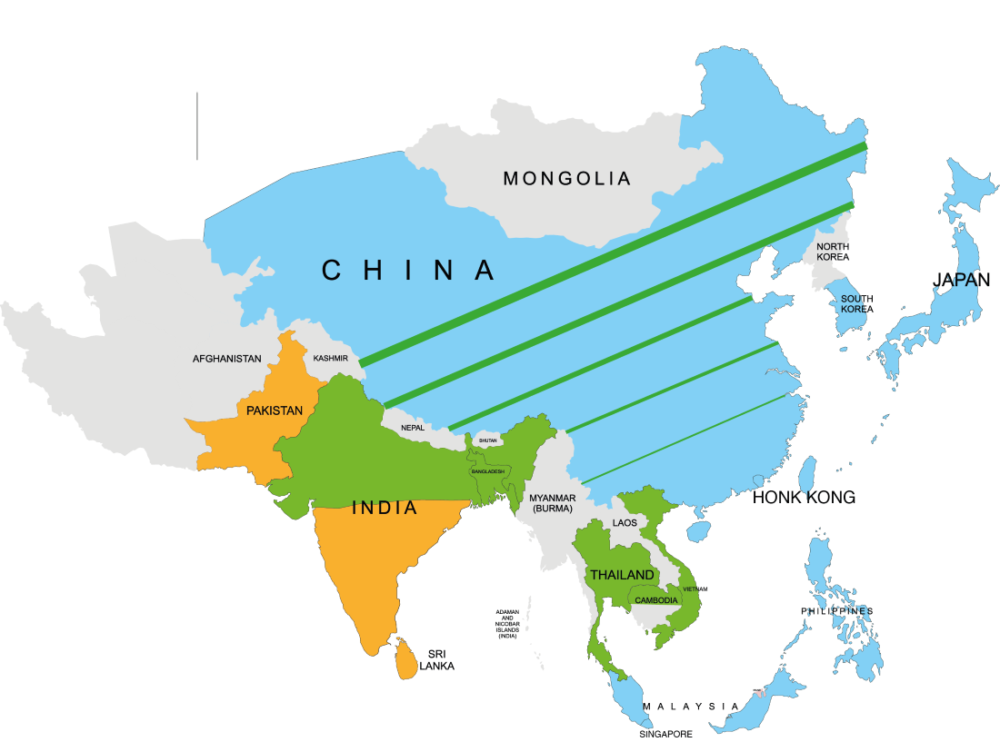

Presence & Mission
Marist Brothers'
Foundation
While most of the brothers minister in school settings, others work with young people in parishes, religious retreats, spiritual accompaniment, at-risk youth settings, young adult ministry, and overseas missions.
Our Humble Beginnings
Our Humble Marist Beginnings Marcellin's Inspiration
"All to Jesus through Mary. All to Mary for Jesus"
The Marist Brothers of the Schools, commonly known as simply the Marist Brothers, is an international community of Catholic religious institute of brothers. In 1817, Marcellin Champagnat, a Marist priest from France, founded the Marist Brothers with the goal of educating young people, especially those most neglected. While most of the brothers minister in school settings, others work with young people in parishes, religious retreats, spiritual accompaniment, at-risk youth settings, young adult ministry, and overseas missions.
St. Marcellin Champagnat decided to start an institute of consecrated brothers in the Marist tradition, building schools for the underprivileged where they might learn to become "Good Christians and Good people". The decision was inspired by an event, when as a parish priest he was called to administer the last rites to a dying boy named Jean Baptiste Montagne. Trying to lead the boy through his last moments in prayer, Marcellin was struck by the fact that the young man had no gauge of Christianity or prayer. From that moment, Champagnat decided to start training brothers to meet the faith needs of the young people of France.
As a Marist priest, Champagnat had a particular affinity for the Blessed Virgin Mary, so upon conception of the idea of Marist Brothers, Champagnat chose to call his brothers Petits Frères de Marie (Little Brothers of Mary), emphasising the meekness and humbleness he wished them to pursue, and seeking their consecration to her as an exemplar of fidelity to Christ. In 1863, 23 years after Champagnat's death, the Marist Brothers institute received the approbation of the Holy See, whereupon the order received the title of Fratres Maristae a Scholis (Marist Brothers of the Schools), hence the post-nominal letters of FMS. They received a particular mandate to follow the Marist Fathers to the Pacific and administer to the new colonies of the Pacific nations and Australia. This harkens back to a Marist legend about Champagnat.
A favourite maxim of St. Marcellin was that he wanted "to make Jesus known and loved" throughout the world, and to demonstrate he would run a needle through an apple (representing the earth) as an example of how he wanted the message of "Ad Jesum per Mariam" or "To Jesus through Mary" to cross the globe. The end of the needle came out in what would be the equivalent of the Pacific in relation to France where he inserted the needle, and so thus the Marist Brothers have a presence throughout the Pacific, including in Australia and New Zealand.
